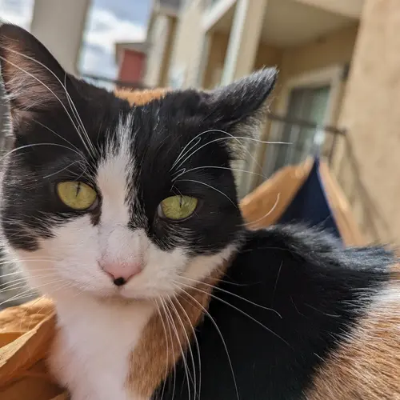
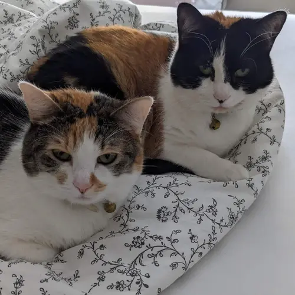

About Me
My name is Josh Romero Ramirez.
I am currently a student at Brigham Young University-Idaho, pursuing a BS in Cloud Computing. Along with the major, I am minoring in Web Development and getting a certificate in Information Technology.
Apart from my degree, I have also spent time getting certificates through AWS, including their Certified Solutions Architect Associate and Certified SysOps Administrator Associate.
My Family
I have been married since 2020. My amazing wife is my everything.
 Currently, our family is just us and our cats: Bonbon and Mochi. They are twin calicos that are a little over 3 years old. Bonbon has the black mask, Mochi is the mostly white one.
Projects
Many of my projects can be found on my GitHub. Some of my favorites are:
- WDD230: A series of projects I did as part of my front-end development class.
- Math Facts for Staples: Stated in my resume as a business consultation project, I built this website from scratch in less than 4 hours as a proof of concept for a client. I am most proud of it passing SEO and accessibility tests with a perfect (or almost perfect) score.
- Project Argus (aka The Rekognition Project): The front end for the project listed in my resume as the authentication project. It had more work in the backend, and there was an attempt to containerize it, but this is all that is left.
The Resume Challenge
For the last few years, I have been working on getting my degree from Brigham Young University-Idaho in Cloud Computing. As I prepare to graduate, many people have given me advice as to what I could do to make myself stand out. A good friend of mine told me of Forrest Brazeal's Cloud Resume Challenge. This is my working project and will be updated as I learn more.
To find my resume, click here.